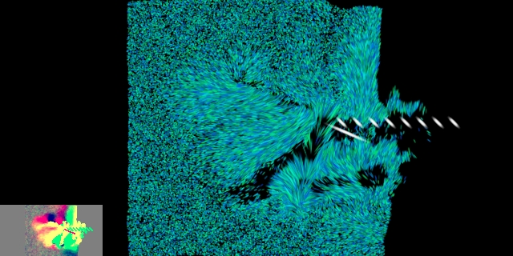
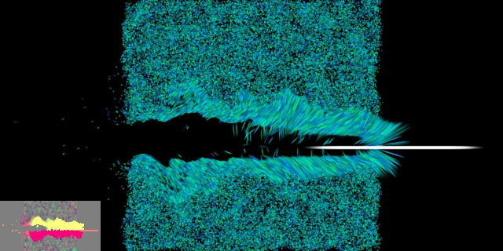
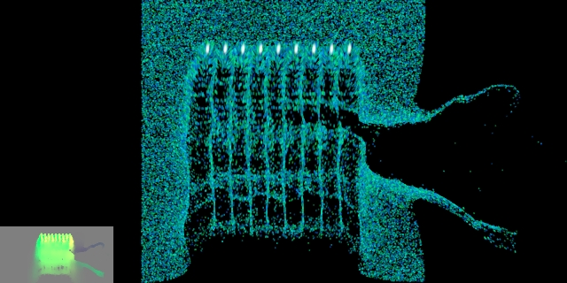
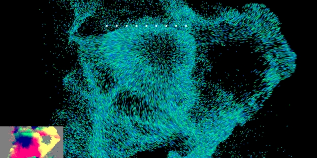
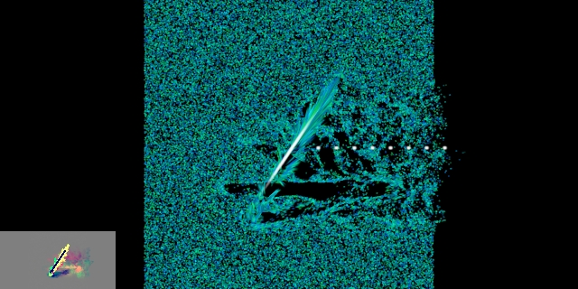
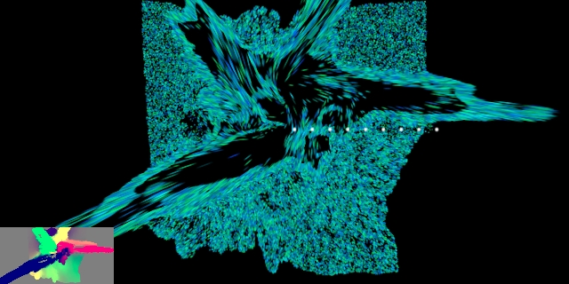

20070816 - CFD Videos
Some more from the 2D test CFD code being adapted to 3D for the engine. This time, movies as well. Same stats as last time: 65536 cells (particles), easily done using a small fraction of the GPU. The gray box in the lower left shows the velocity vectors with color and intensity showing direction and magnitude.
These are all uniform material properties. Finished setup in Atom will have independent properties per cell which are procedurally generated and can be varied with cell animation. All cells will have two material properties which are blended between based on cell state energy transition between natural low energy state and high energy state.
Gas like Jello

Image is Link to Movie (Plays in VLC)
Sandy

Image is Link to Movie (Plays in VLC)
Slow Shockwave

Image is Link to Movie (Plays in VLC)
Water Like

Image is Link to Movie (Plays in VLC)
Dampening and Shock Absorbent

Image is Link to Movie (Plays in VLC)
Springy and Dirty

Image is Link to Movie (Plays in VLC)